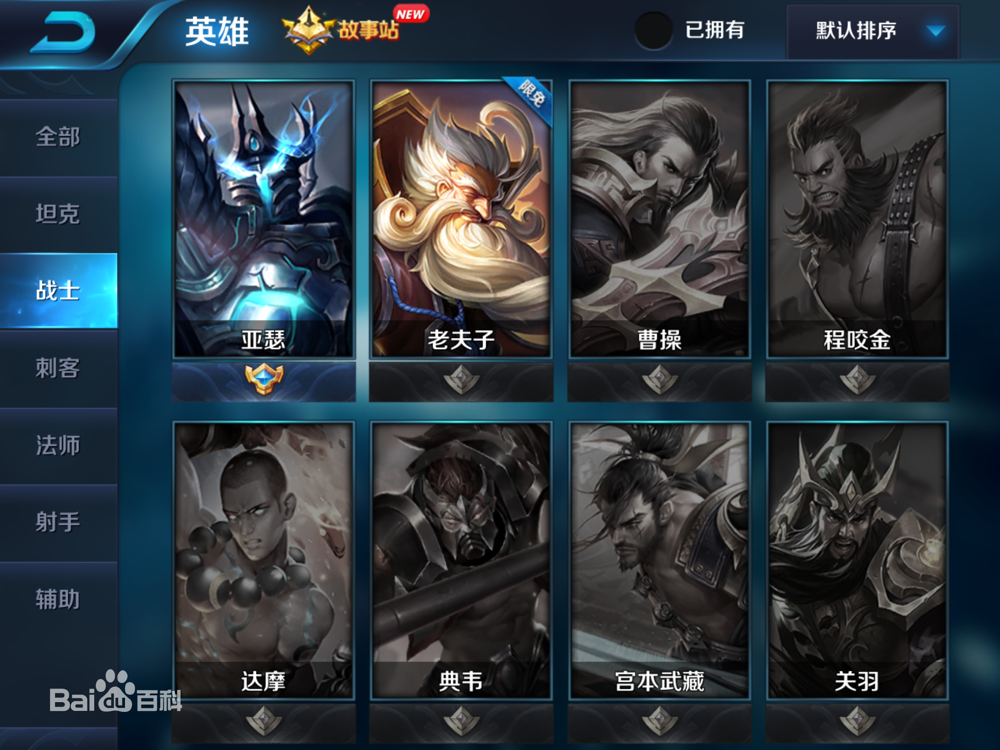
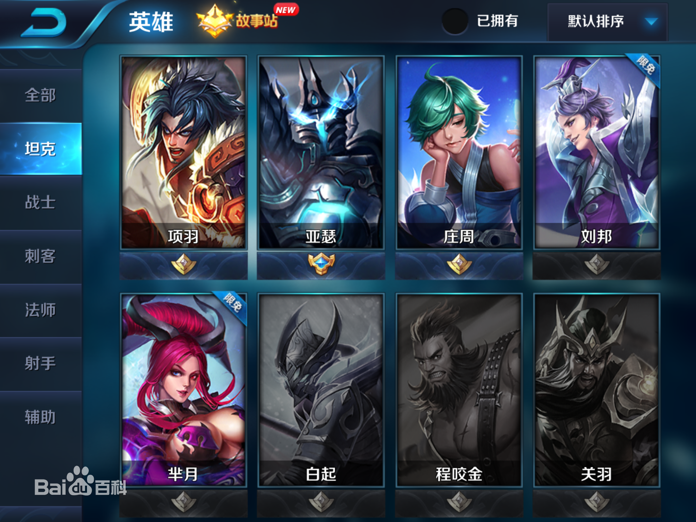
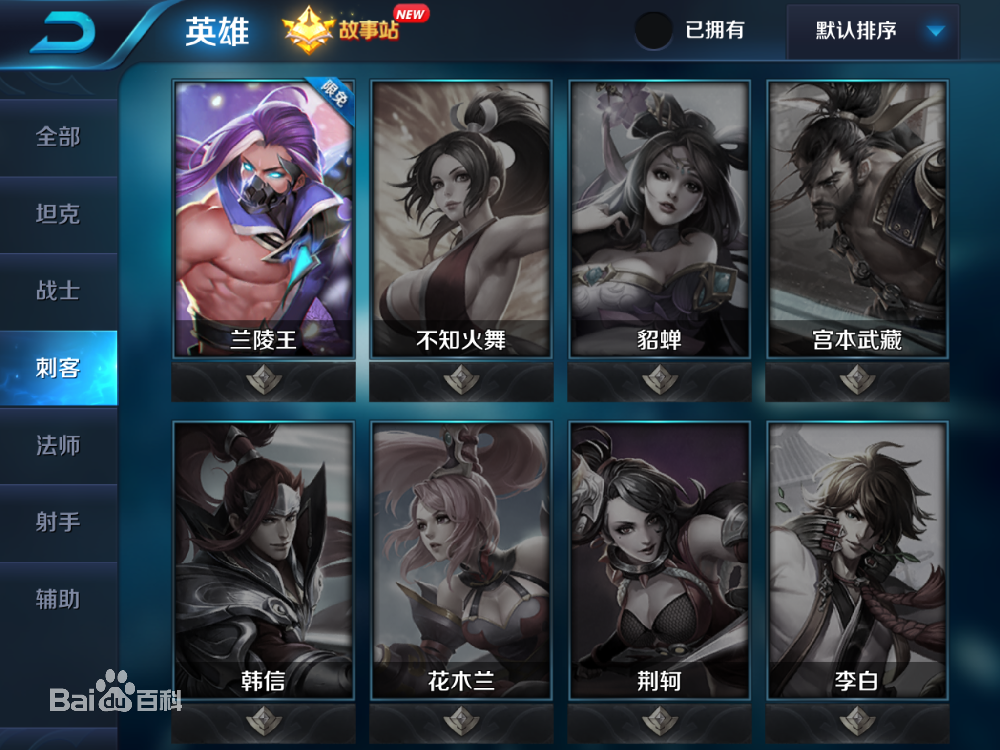
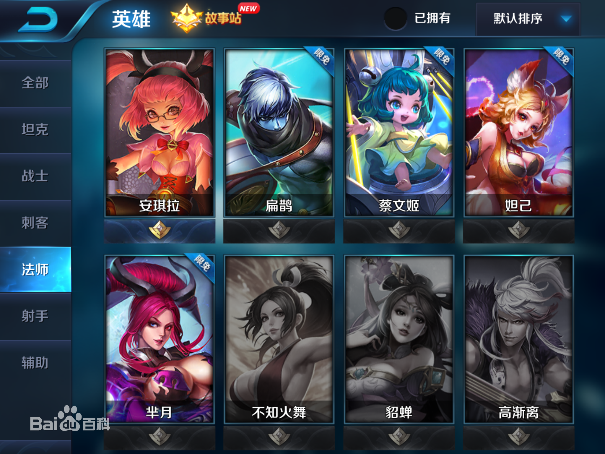
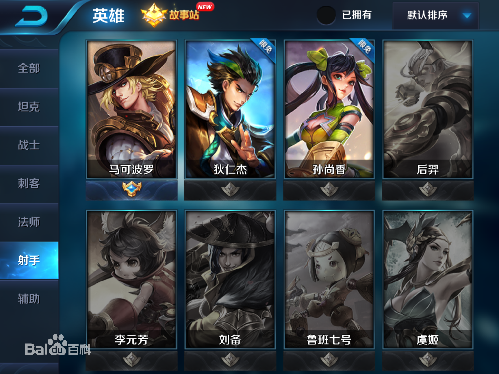
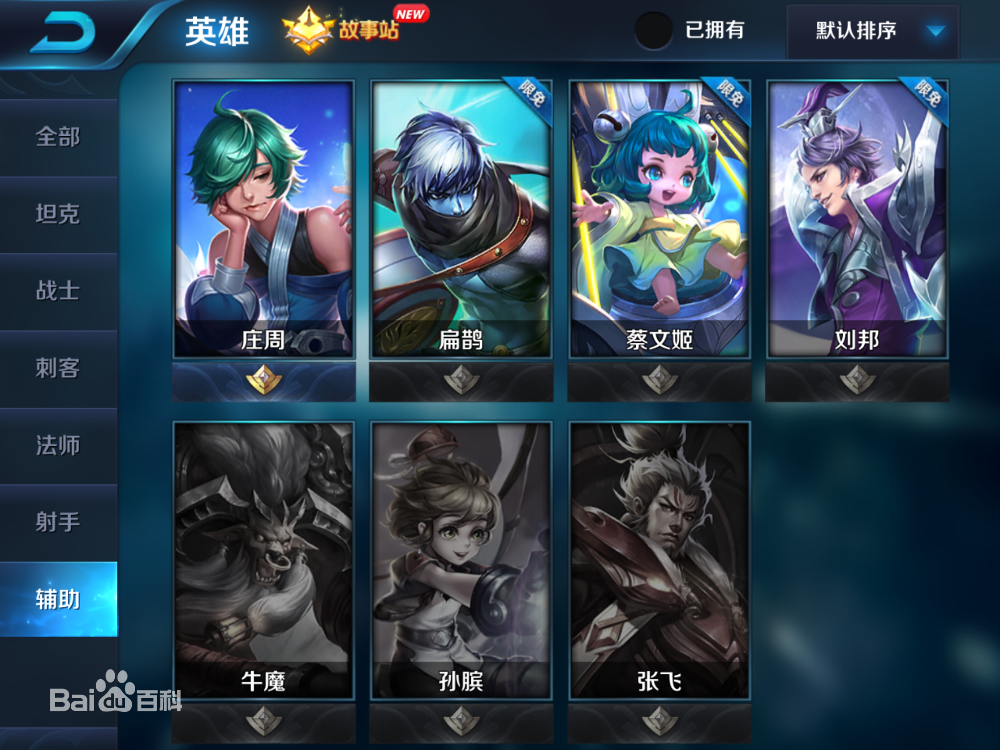

王者荣耀
游戏简介
《王者荣耀》是由腾讯游戏天美工作室群开发并运行的一款运营在Android、IOS、NS平台上的MOBA类手机游戏，于2015年11月26日在Android、IOS平台上正式公测，游戏前期使用名称有《英雄战迹》、《王者联盟》。《Arena
Of Valor》，即《王者荣耀》的欧美版本于2018年在任天堂Switch平台发售。
游戏是类dota手游，游戏中的玩法以竞技对战为主，玩家之间进行1V1、3V3、5V5等多种方式的PVP对战，还可以参加游戏的冒险模式，进行PVE的闯关模式，在满足条件后可以参加游戏排位赛等。
2016年11月，《王者荣耀》荣登2016中国泛娱乐指数盛典“中国IP价值榜-游戏榜top10”。
2017年7月2日，腾讯方面发出游戏“限时令”：7月4日起《王者荣耀》12周岁以下(含12周岁)未成年人每天限玩1小时，并计划上线晚上9时以后禁止登陆功能；12周岁以上未成年人每天限玩2小时。超出时间的玩家，将被游戏强制下线。
2018年10月25日，腾讯再次升级“《王者荣耀》健康系统”，以北京地区为起点，正式启动《王者荣耀》全部用户的强制公安实名校验，未通过校验的游戏账号将禁止登录。同时，为杜绝未成年人“玩小号”的问题，一个未成年人实名信息仅允许用于微信和QQ平台各一个游戏账号的校验。
11月29日，游戏升级人脸识别验证。
2018年11月24日，在2018中国科幻大会上获得最佳科幻游戏奖。
游戏背景
无限时空中，时光的洪流汇聚于同一片大陆。机关术与魔道肆虐，让世界面目全非。英雄，那些熟知的名字，不可思议的聚集在一起。抛却了过往荣光，遵循野心与欲望，随心所欲寻求力量，乃至彼此追逐杀戮。
而在一个又一个传奇的背后，召唤师的身影时隐时现，没错，他们，才是历史真正的创造者，生存或者毁灭，战争，似乎永无止境。
游戏角色
游戏正式服（安卓和IOS平台）已经出了几十位英雄，定期也会推出新的英雄，英雄定位可分为法师、战士、坦克、刺客、射手、辅助，不同的英雄拥有不同的属性和技能。每个英雄都有多个主动攻击技能和1个被动技能，在匹配模式下，玩家可以使用周免英雄、体验卡英雄和已经购买的英雄参加战斗。
|
战士属于近战英雄，战士分为突进英雄、防御英雄、团控英雄等，防御性英雄的自带血量和防御都高，在游戏中可作为半肉半输出，团战时，可以吸收敌方英雄的伤害，又可以造成一定量的伤害。突进英雄一般具有较强的灵活性，具有一定的位移技能，具有生存能力和攻击能力强的特点，此类英雄以攻击装和攻速装为主，团战时攻击敌方后排英雄或脆皮英雄。团控英雄一般具有团控的技能，偏向于防御英雄，团战时，冲入敌方人群中，用团控技能短暂性控制住敌方英雄，为己方英雄输出制造环境。主战士类英雄有吕布、曹操、赵云、孙悟空、花木兰、宫本武藏、露娜等。
|

|
|
坦克又称肉盾，属于防御类英雄，该类英雄通常具备生命值高、防御力强等特点，坦克类英雄在对战游戏中以吸收伤害，保护友军的英雄为主，一般以出防御装为主。坦克类英雄在战斗中可以限制敌方的后排，还可以挡在己方英雄的前排吸收伤害和控制。坦克类英雄有程咬金、牛魔、项羽、白起等。
|

|
|
刺客属于高爆发、收割类英雄，此类英雄的特色是，前期发育，支援收割，后期切后排，秒脆皮英雄，刺客类英雄以出攻击装为主，团战时以偷袭和收割为主，刺客自身的防御较低，团战时应尽量避免被控制和集火攻击。主刺客类英雄有韩信、荆轲、兰陵王、狂铁等。
|

|
|
法师属于魔法伤害类英雄，法师类英雄分高爆发、突进和团控等，出装以法术武器为主，高爆发类法师英雄具有高法师伤害的法师技能，能在短时间内秒掉敌方魔抗低的英雄，团控类法师英雄具有控制技能，能持续对敌方英雄造成法术伤害，突进类法师英雄具有一定的位移技能，具有一定的灵活度。法师的防御和生命值偏低，属于脆皮英雄，在团战时，站位以后排为主，突进类法师英雄以收割为主。法师类英雄有貂蝉、妲己、芈月、嬴政等。
|

|
|
射手俗称ADC，英雄多为远程物理输出为主，远程英雄比较容易利用射程优势安全的输出，在整个团队担任重要的物理输出位置，射手类英雄的特点是输出伤害高，生命值低，防御低、属于脆皮类英雄，在团战中容易被敌方英雄集火先秒杀，或偷袭秒杀。射手在团战时，站位属于后排，需要己方英雄给予保护。射手类英雄有狄仁杰、鲁班七号、孙尚香、后羿等。
|

|
|
辅助属于保护性英雄，一般与射手类英雄一路，辅助类英雄的技能以保护队友为主，属于增益性技能，团战时可充当肉盾吸收伤害，还可以为队友提供属性。辅助类英雄有孙膑、太乙真人、蔡文姬、庄周等。
|

|